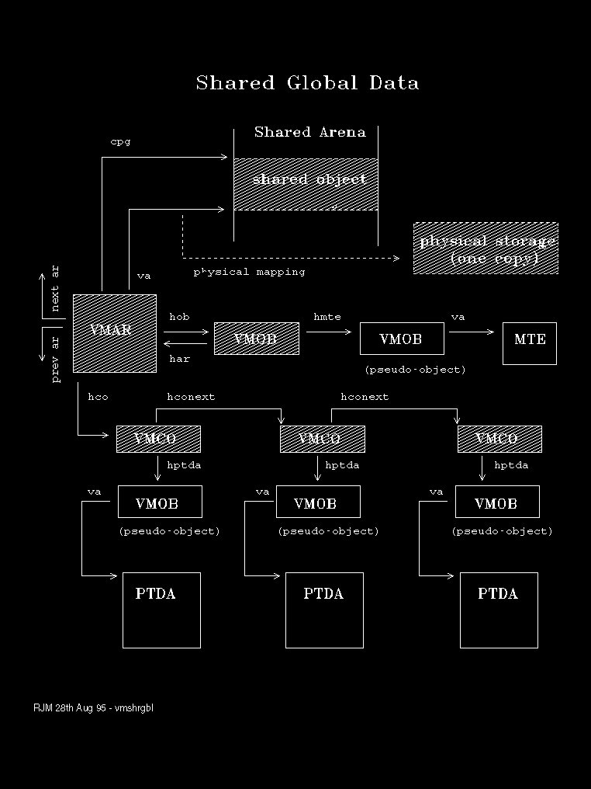

DLL Global Data and Named Shared, Giveable and Gettable allocations are potentially shareable among multiple processes. With these types of allocations data and address range is common to all who access it. Those that are given access are recorded by the VMCO chain.
With this type of allocation, there is only one VMAR, and VMOB.
Note that the own field of the VMOC, which is interpreted on the right hand side of the .MO display, may be one of five possibilities:
hmte
The following diagram depicts this situation.
Control blocks and data that directly represent the allocation are shown shaded. 